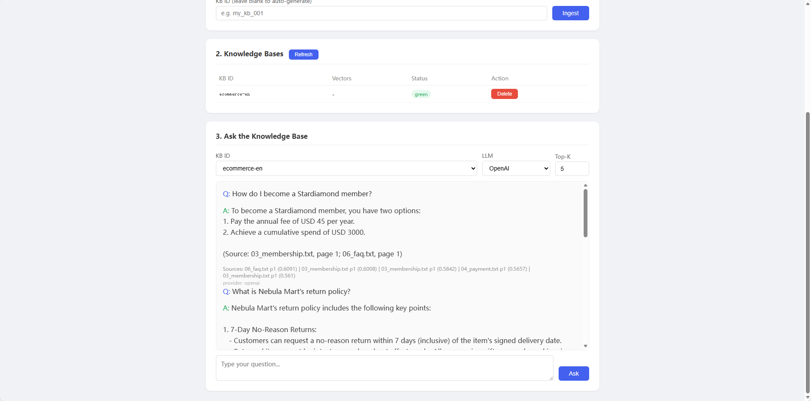

A freemium RAG platform with image-text hybrid retrieval and dual-market pricing (China + overseas). Built around bge-m3, Milvus, and a pluggable multi-provider LLM router. I author the Python AI service layer end-to-end.
带 图文混合检索 的 Freemium RAG 平台,中国 + 海外双市场定价。基于 bge-m3、Milvus,以及一个可插拔的多 provider LLM 路由。Python AI 服务层我独立完成。
The product bet: most RAG offerings ship a single embedding model and a single LLM. This one lets teams hot-swap providers, blend text with image retrieval, and run the whole thing on their own compute when compliance demands it.
产品思路:多数 RAG 产品只给一个 embedding + 一个 LLM。这个可以随时切 provider、把文本和图像一起检,合规要求时可以整套跑在客户自己的机器上。
